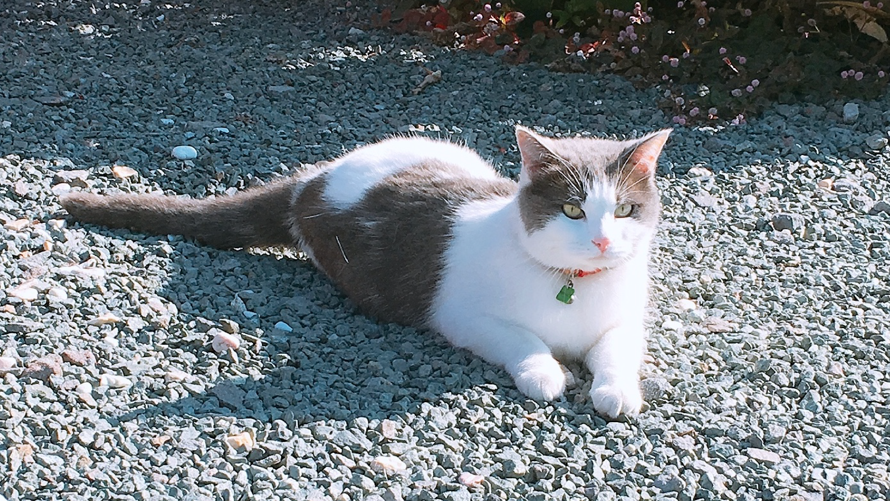
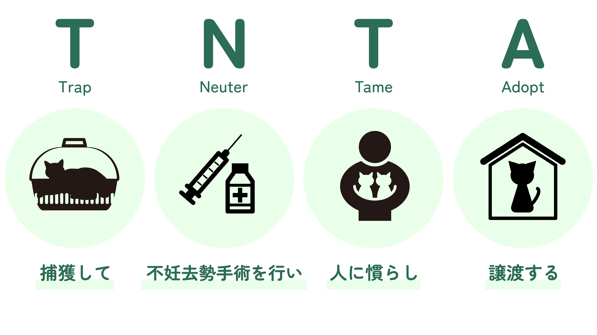

四つ葉ねこについて
四つ葉ねこ発足の経緯
外で暮らす飼い主のいない猫たちは
過酷な環境下に置かれています。
そんな猫たちに生涯のお家を見つけてあげたい、幸せになって欲しい、との思いから
市民と行政の協働で2020年9月に発足しました。

活動内容
四つ葉ねこはTNTA活動をメインに活動しています。TNTA活動とは、
猫を捕獲して→不妊去勢手術を行い→人に慣らし→譲渡することです。

人と猫が共生する社会を目指すためには、 継続して長期的な取り組みが必要です。そのために繁殖を防止し、適正管理することで 苦情や殺処分を減らす活動を行っています。 初めての方でも安心して飼っていただけるよう、 引き渡し後のサポートにも力を入れています。